Lecture 5: Advanced Visualization and Other Data Sources
In Lecture 2, we saw that visualization using ggplot could provide important insights into large datasets. Today, we will learn more about ggplot and use what we have learned to study the relationship between batting averages in consecutive seasons.
Visualizing the Diving Dataset
In this course, we will be using the package ggplot2 for all of our data visualization. The gg stands for “grammar of graphics”, a framework for data visualization. This framework separates the process of visualization into different components: data, aesthetic mappings, and geometric objects. These components are then added together (or layered) to produce the final graph. We’re going to illustrate these components using the diving dataset from Prof. Wyner’s lecture.
Components of a Plot
The first step in any data visualization is to tell R in which tbl the data we want to plot lives. This is done using the ggplot() function. Notice that we are assigning the plot to a new variable, diving_hist. Later, we will add layers to the plot using the + operator.
Aesthetics map the data to the properties of the plot. Examples include:
x: the variable that will be on the x-axisy: the variable that will be on the y-axiscolor: the variable that categorizes data by colorshape: the variable that categorizes data by shape
You can define the aes in the ggplot call, which will then be used for all later layers, or you can define the aes in the geom (see below), which will only apply to that geom. Geometric objects, or geoms, determine the type of plot that will be created. Examples include:
geom_point(): creates a scatterplotgeom_histogram(): creates a histogramgeom_line(): creates a linegeom_boxplot(): creates a boxplot
Putting it All Together
Let’s make a histogram of judge’s scores.
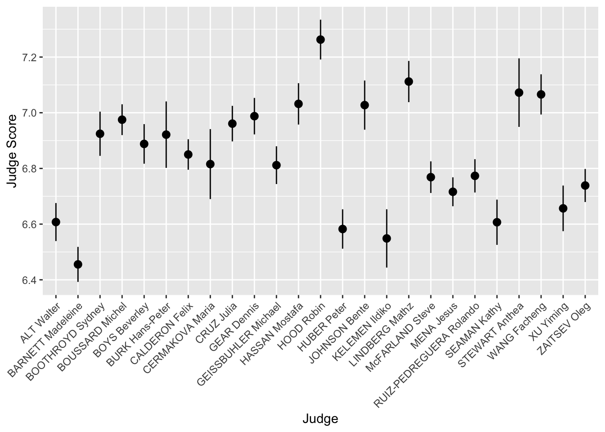
In the code above, we first overwrote diving_hist so that is now a histogram of judges’ scores where each bin had width 0.25. In the second line, we asked R to display this object. For ggplot code it is very important that the + goes at the end of a line, just like the pipe %>%
Notice that the label for the x-axis is JScore, which is the column name from the tbl. We can change the label by adding a layer.
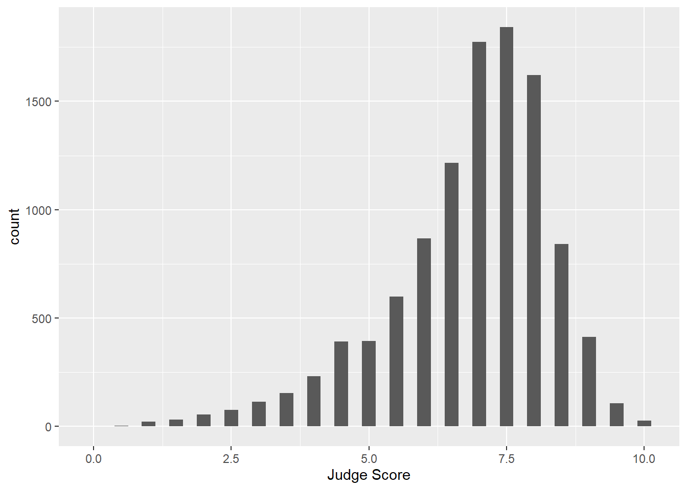
Facets
What if we want to separate the judges’ scores by country? We can use facets. Facets allow you to separate graphs by category. We do not need to redo our above code for the histogram - we only need to add a facet layer to our graph hist. The first argument of facet_wrap is the column of our dataset that contains the category information. Note that we need a tilde (~) in front of JCountry: later in the course we will discuss why this is needed. The second argument of facet_wrap specifies the number of rows for which to display the graphs.
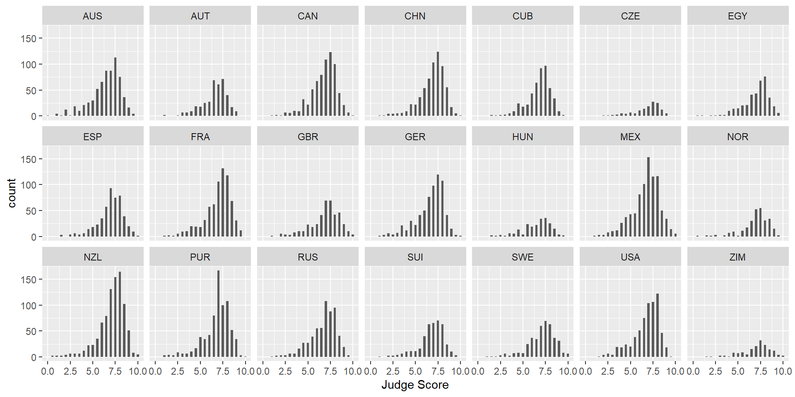
To get a sense of whether a particular country’s judges are biased, it would be useful to add a reference line at the median score over all judges and countries to each facet. We can do this with geom_vline(), which adds a vertical line to your plot. Note: color is not in aes in the above code because it is a single value. In the next example, each category has a different color, so color is in aes.
> median_score <- median(diving[["JScore"]])
> diving_hist <- diving_hist + geom_vline(xintercept = median_score, color = "red")
> diving_hist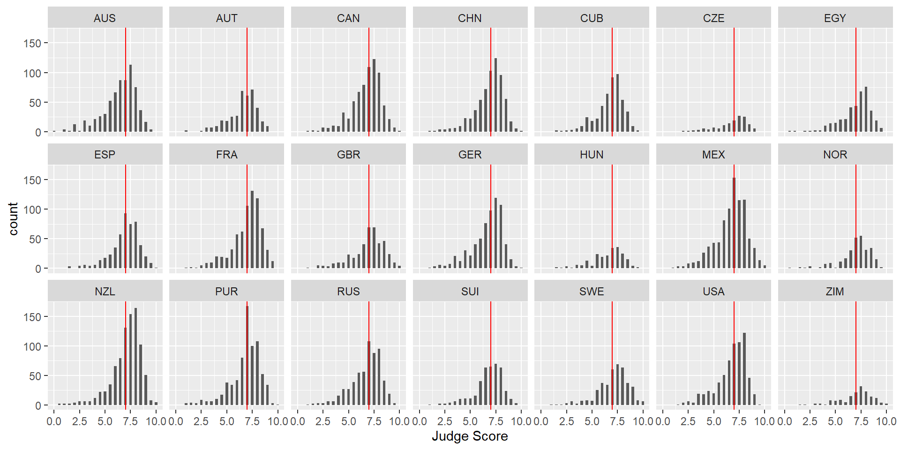
Boxplots
Boxplots are also an important visualization tool. We now create boxplots of the judges’ scores, separated by diving round. Here we use the aes property fill = Round to color (or “fill”) the boxplots by country.
> diving_box <- ggplot(data = diving)
> diving_box <- diving_box + geom_boxplot(aes(x = Round, y = JScore, fill = Round))
> diving_box <- diving_box + labs(title = "Diving scores by round", x = "", y = "Judge Score", fill = "Round")
> diving_box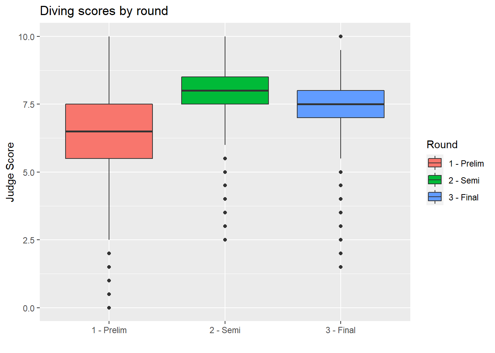
We can also remove the unnecessary x-axis ticks and labels as the legend on the right is sufficient. We do so using the theme layer:
> diving_box <- diving_box + theme(axis.title.x = element_blank(), axis.text.x = element_blank(), axis.ticks.x = element_blank())
> diving_box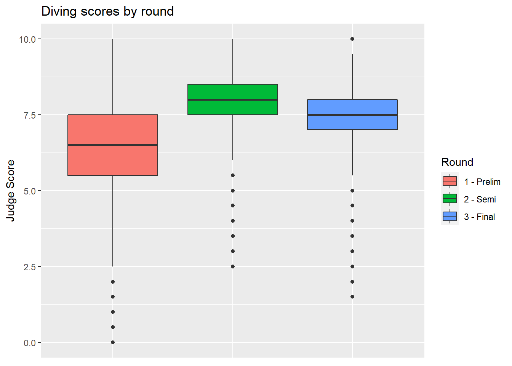
Barplots
We can also create barplots using geom_bar:
> bar <- ggplot(data = diving)
> bar <- bar + geom_bar(aes(x = JCountry, fill = JCountry))
> bar <- bar + labs(x = "Judge Country", fill = "Judge Country")
> bar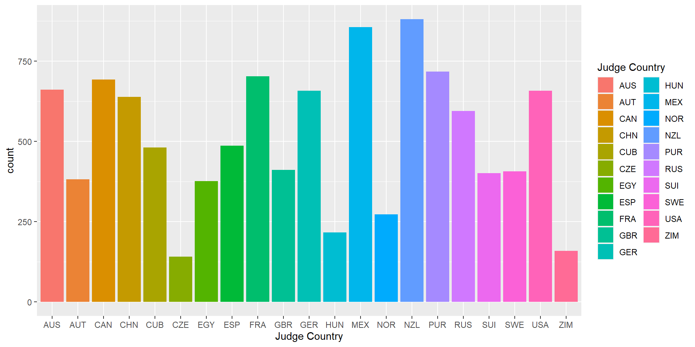
Scatterplots
Now let’s turn back to scatterplots, which were introduced in Module 2. We plot judges’ score versus rank of the diver. As we expect, the higher the divers’ rank, the higher their score.
> scatter <- ggplot(data = diving)
> scatter <- scatter + geom_point(aes(x = Rank, y = JScore, color = Country))
> scatter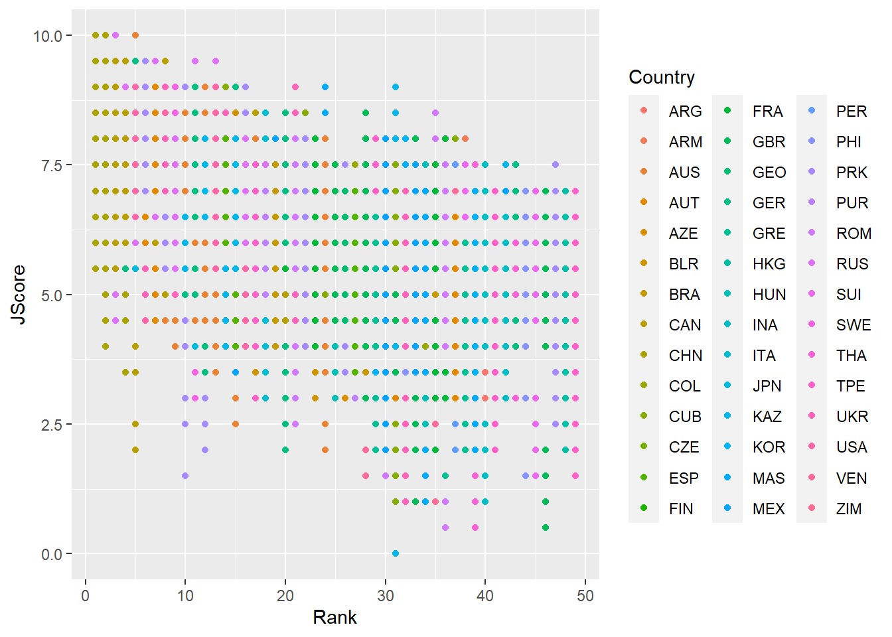
Lines
We can also add an abline to our scatterplot - that is, a line where we specify the y-intercept (intercept) and the slope (slope):
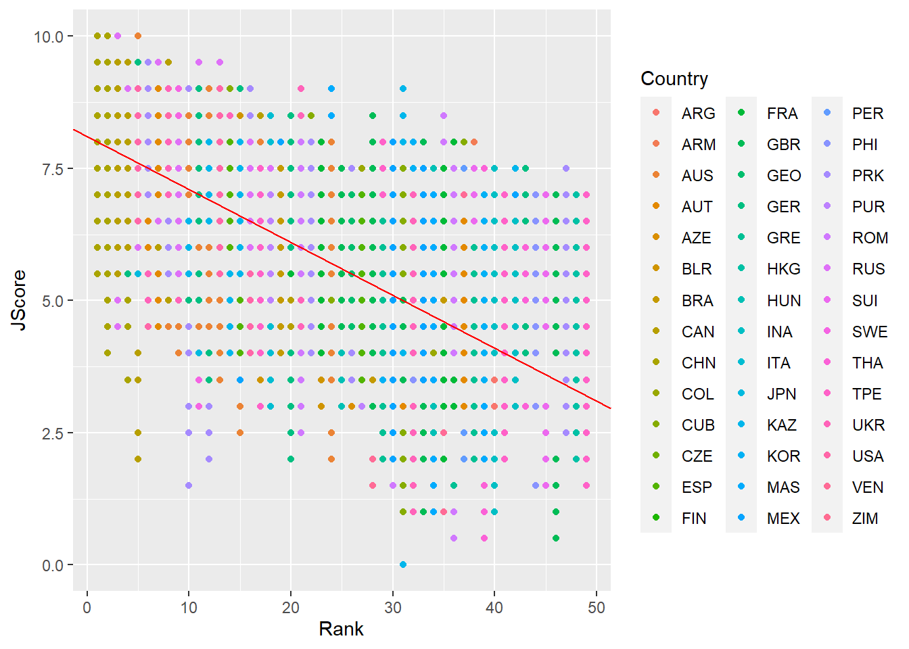
Note: geom_abline is different from geom_line: geom_line “connects the dots” between your data and so doesn’t have to be a straight line, whereas geom_abline draws a straight line with the specified slope and y-intercept.
Other geom for lines are: - geom_vline: to add a vertical line to a plot - geom_hline: to add a horizontal line to a plot
Stats
We can also specify a layer using stat_, which stands for statistical transformation. This is useful if we want to plot a summary statistic of our data, such as a mean or median. By using a stat_ layer, we do not have to compute this summary statistic beforehand - ggplot will compute the summary statistic for us and then plot the result.
For example, suppose we want to plot the means of each judge’s score and provide error bars of one standard deviation on either side of the mean. We could use summarize and group_by to find the mean and standard deviations for each judge, or we could just use a stat_ layer!
The layer stat_summary() computes and then plots a user-specified summary statistic. We choose the option mean_se to calculate the means and standard deviations of the scores of each judge.
As always, we set up the plot by calling ggplot, specifiying data = diving and then providing the aes. In this case, we want the judge on the x-axis and their scores on the y-axis. We then add out stat_summary layer.
> judges <- ggplot(data = diving, aes(x = Judge, y = JScore))
> judges <- judges + stat_summary(fun.data = mean_se)
> judges <- judges + labs(y = "Judge Score")
> judges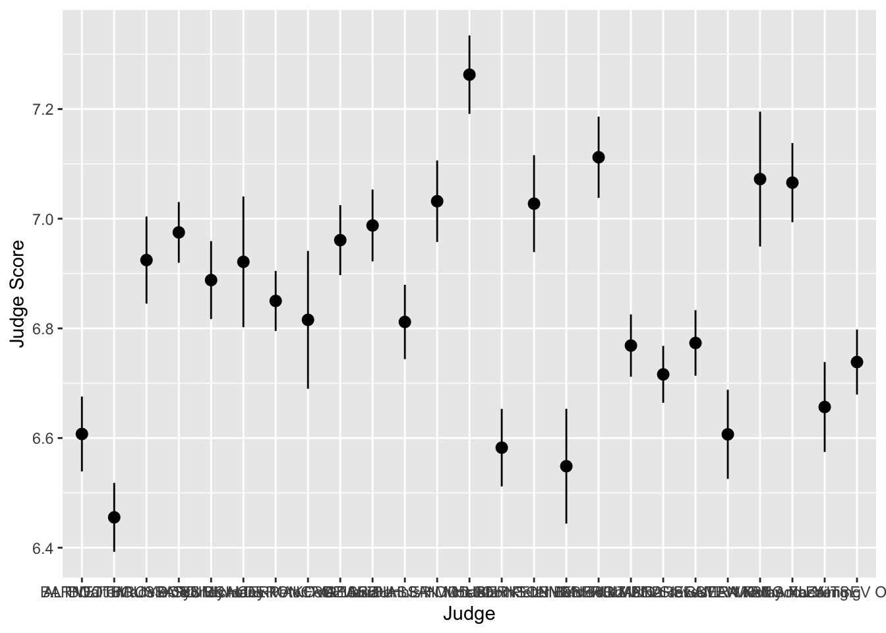
We can see that the judges’ names are bunched together… ideally we would want their names to be horizontal to make it easier to read. Luckily, ggplot has an easy fix for this!

Scales
Scales allow you to adjust the aesthetics or visual aspects of a plot. We return to the scatter plot of the judges’ scores vs rank of the divers. This time, we want to color the points by the difficulty of the dive.
We use the layer:
scale_color_distiller
Above, the second word, color, is the aes we want to change. We can replace it with x, y or fill, depending on the aes we want to change.
The third word is distiller, which we use because our color variable, Difficulty, is continuous. If it were discrete, we would write brewer instead.
> scatter <- ggplot(data = diving)
> scatter <- scatter + geom_point(aes(x = Rank, y = JScore, color = Difficulty))
> scatter <- scatter + scale_color_distiller(palette = "OrRd", direction = 1)
> scatter
Interestingly, it seems that some of the highest ranked divers perform most of the less difficult dives, but perform these easy dives very well.
To further investigate, we plot a 2D histogram of Rank vs Difficulty.
> hist <- ggplot(data = diving)
> hist <- hist + geom_bin2d(aes(x = Rank, y = Difficulty))
> hist <- hist + scale_fill_distiller(palette = "Spectral")
> hist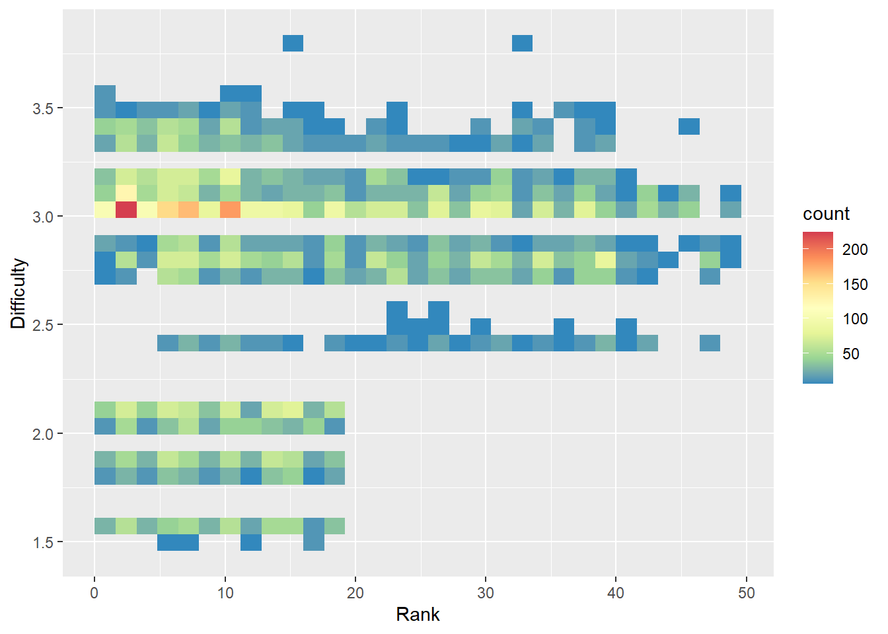
Note that we use fill instead of color in scale_fill_distiller to control the fill of the histogram bins.
From the 2D histogram, we can see that the higher ranked divers attempt both more difficult and less difficult dives, unlike the lower ranked divers who only attempt more difficult dives.
ColorBrewer
The palettes used in this module, including “OrRd” and “Spectral”, come from ColorBrewer. You can take a look at the website and use some of these color palettes in your plots!
Other Data Sources
So far in this course you’ve worked with data that we had already prepared for you. It turns out that there are many R packages and tools that you can use to get data from a variety of different sources. Below, we will provide a brief walkthrough of just a few of these resources.
Lahman
The Lahman Baseball Database is a popular resource created by Sean Lahman with historical data going back to 1871. Rather than having to access the database directly via complicated computing procedures, there is an R package we can install to access the data instead. The following code installs the package from the CRAN:
Next we load the package, and checkout what datasets are available:
There is an incredible amount of data here going up through the 2018 season (it updates following the end of each season). As an example, let’s access the Teams dataset, use a group_by operation to calculate the number of strikeouts each year since 1871, and plot the line over time:
> data("Teams")
> Teams %>%
+ group_by(yearID) %>%
+ summarize(n_so = sum(SO, na.rm = TRUE)) %>%
+ ggplot(aes(x = yearID, y = n_so)) +
+ geom_line() +
+ labs(x = "Year", y = "Number of strikeouts",
+ title = "Total number of strikeouts in each baseball season since 1871",
+ caption = "Data courtesy of Lahman") +
+ theme_bw()
`summarise()` ungrouping output (override with `.groups` argument)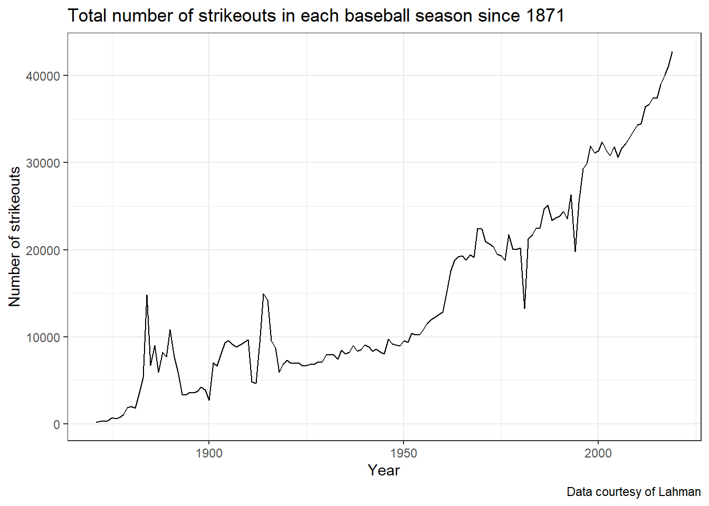
We can see the increasing trend over, but think about how this display could be improved to handle possible changes that have taken place in baseball.
Installing GitHub Packages
An important note to keep in mind is that most of these resources are largely still in development, this means you may face challenges with installation and use. While the vast majority of R packages you will commonly use are able to be installed using install.packages() because they are on the CRAN, there are a variety of popular R packages for accessing sports data that are currently only available through GitHub. In order to access these packages, we first need to install them using a package called devtools. The code below installs the devtools package:
The devtools package has a function, install_github that we will use for installing the remaining packages used below.
baseballr
Created by Bill Petti, the baseballr package has become a popular resource for accessing baseball data from variety of resources, such as FanGraphs and Baseball-Reference directly into R. One of the best features of the baseballr package is the functionality it provides us for directly accessing the publicly available pitch-by-pitch and Statcast data available from baseball-savant.
We first install the package using the devtools package explained above, and then load its functions:
Using the baseballr package we can access all pitches thrown to a hitter in the current season, giving us Statcast data like exit velocity and launch angle. We first use the playerid_lookup function to find the Statcast ID for the Pittsburgh Pirates (All-Star?) firstbaseman Josh Bell:
This will load up a look-up table with all identifiers joining various sources together (it will take a couple minutes to run and don’t worry about the warning messages). The Josh Bell we’re interested in has the mlbam_id of 605137. Using this id, we can grab all pitches thrown to Bell in the current MLB season so far:
> bell_statcast_data <- scrape_statcast_savant_batter(start_date = "2019-01-01", end_date = "2019-12-31", batterid = 605137)This dataset contains many columns, for now we will look at the relationship between the distance traveled of Josh Bell’s batted balls (denoted by type == "X") and the launch angle (launch_angle) as well as the exit velocity (launch_speed):
> bell_statcast_data %>% filter(type == "X") %>% ggplot(aes(x = launch_speed, y = launch_angle, color = hit_distance_sc)) + geom_point() + scale_color_viridis_c(option = "A") +
+ labs(x = "Exit velocity (MPH)", y = "Launch angle (degrees)", color = "Distance (feet)", title = "Josh Bell's launch angle, exit velocity, and distance traveled",
+ caption = "Data accessed via baseballr")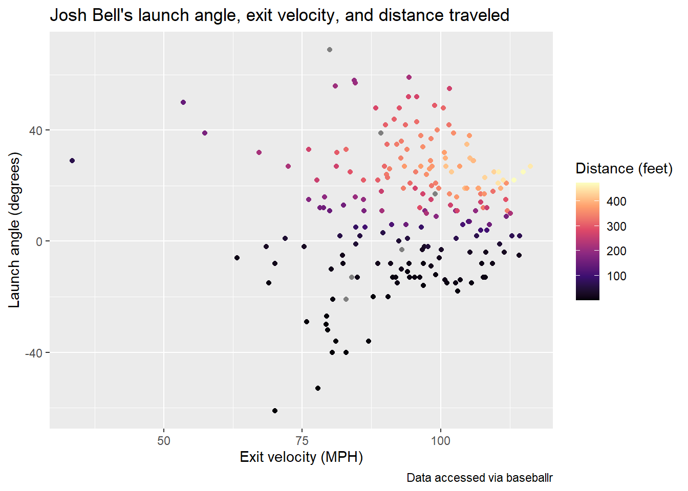
This is just a single example of the type of data available using baseballr, see the package website for more data acquisition functions. Additionally, the Exploring Baseball Data with R website by Jim Albert is an incredible resource with a variety of examples of learning R code all in the context of baseball data analysis.
nbastatr
The nbastatr package created by Alex Bresler is analogous to the baseballr package as it provides many different functions for accessing NBA data from a variety of websites. Again to be able to use the package you need to install it from GitHub:
There will likely be several messages that appear when installing this package, please let us know if you encounter any strange issues. The code below demonstrates how to get all shot attempts by the 2019 NBA champions, the Toronto Raptors, in the past season using this package:
Using this shot data, we can view the all shot attempts by the Raptors throughout the season colored by whether or not they made the shot.
> raptors_shots %>%
+ ggplot(aes(x = locationX, y = locationY,
+ color = isShotMade)) +
+ geom_point(alpha = 0.5) +
+ scale_color_manual(values = c("darkorange", "darkblue")) +
+ theme_bw() +
+ labs(title = "Shot attempts by Toronto Raptors in 2018-19 NBA season",
+ caption = "Data accessed via nbastatR")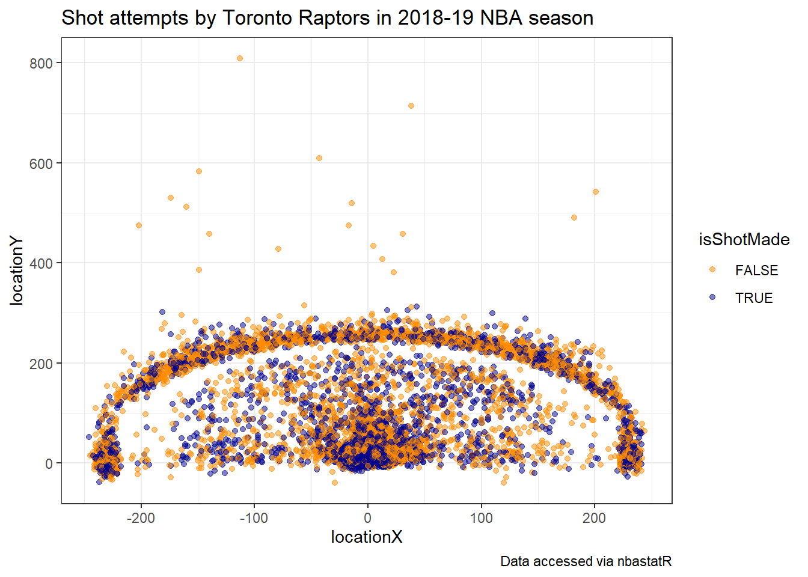
It’s apparent from this chart the effect of the three-point line of their shot selection.
nflscrapR
Created by Max Horowitz, Ron Yurko, and Sam Ventura, the nflscrapR package gives R users the ability to scrape play-by-play data from the NFL in real-time during games providing expected points and win probability estimates. Just like the baseballr and nbastatR packages, the nflscrapR package must be installed from GitHub:
Now we can use this package to gather play-by-play data, but this can take some time to run. Instead, one of the package authors (and one of your instructors!) has already scraped all NFL data going back to the 2009 season and made it available to access on GitHub. We can directly read in the play-by-play data from this past 2018 regular season using the following url in the read_csv function:
> pbp_2018 <- read_csv("https://raw.githubusercontent.com/ryurko/nflscrapR-data/master/play_by_play_data/regular_season/reg_pbp_2018.csv")With this data, we can summarize the performance of all NFL teams using the expected points added (EPA) per game on offense and defense. EPA tells us how much value the team provided relative to an average baseline. The more positive the better the offensive performance. This means the more negative the value the defensive performance, so in the code chunk below we multiply the defensive values by -1 so it’s similar to offensive performance higher values meaning better performance. The following code uses this data to create offensive and defensive summaries that we will join together to plot:
> offense_epa_18 <- pbp_2018 %>%
+ filter(!is.na(posteam)) %>%
+ group_by(posteam) %>%
+ summarise(n_games = length(unique(game_id)),
+ off_total_epa = sum(epa, na.rm = TRUE)) %>%
+ mutate(off_epa_per_game = off_total_epa / n_games)
`summarise()` ungrouping output (override with `.groups` argument)
>
> defense_epa_18 <- pbp_2018 %>%
+ filter(!is.na(defteam)) %>%
+ group_by(defteam) %>%
+ summarise(n_games = length(unique(game_id)),
+ def_total_epa = sum(epa, na.rm = TRUE)) %>%
+ # This time multiply by -1, since negative values are better for defense:
+ mutate(def_epa_per_game = -1 * def_total_epa / n_games)
`summarise()` ungrouping output (override with `.groups` argument)Now rather than displaying just points or team abbreviations, we can take advantage of files provided to use by Michael Lopez, the Director of Data and Analytics for the NFL, and plot the team logos directly. This can be done using the ggimage package that can be installed as follows:
Next we access the images as a dataset, and join it together to the offense and defense summaries before creating our chart:
> library(ggimage)
> nfl_logos_df <- read_csv("https://raw.githubusercontent.com/statsbylopez/BlogPosts/master/nfl_teamlogos.csv")
Parsed with column specification:
cols(
team = col_character(),
team_code = col_character(),
url = col_character()
)
>
> # Create the data frame to be used for all of the charts:
> offense_epa_18 %>%
+ inner_join(defense_epa_18, by = c("posteam" = "defteam")) %>%
+ left_join(nfl_logos_df, by = c("posteam" = "team_code")) %>%
+ ggplot(aes(x = off_epa_per_game, y = def_epa_per_game)) +
+ geom_image(aes(image = url), size = 0.05) +
+ labs(x = "Offensive EPA per game",
+ y = "Defensive EPA per game",
+ caption = "Data accessed via nflscrapR",
+ title = "Offensive and defensive EPA per game for each team in 2018 NFL season") +
+ # Add reference lines at 0
+ geom_hline(yintercept = 0, color = "red", linetype = "dashed") +
+ geom_vline(xintercept = 0, color = "red", linetype = "dashed") +
+ theme_bw()
Warning: Removed 1 rows containing missing values (geom_image).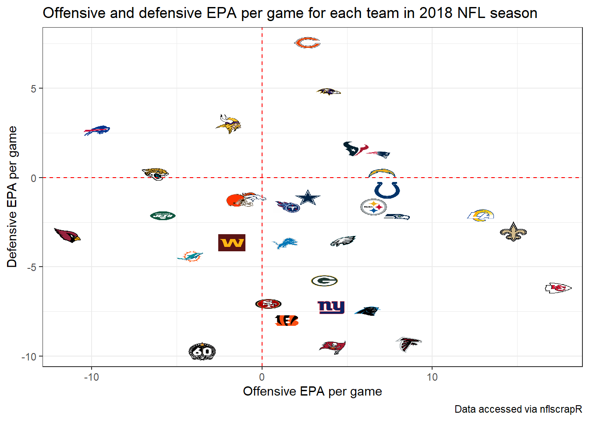
The top right displays the teams that excelled at both offense and defense, while the lower right shows teams that had the best offenses such as the Chiefs but performed poorly on defense. The lower left shows the worst overall teams, which should not come as a surprise that the Arizona Cardinals and Oakland Raiders jump out.